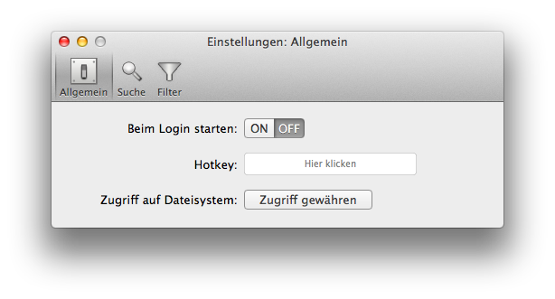
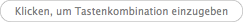
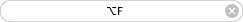
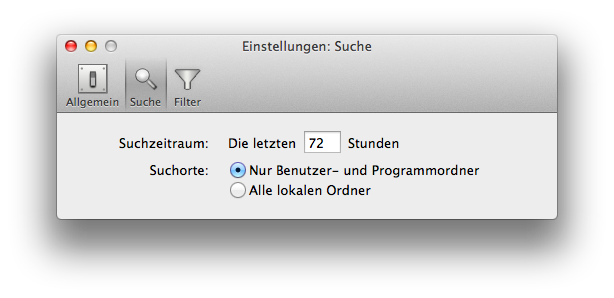
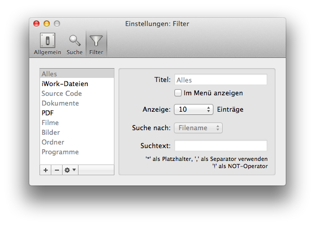

Die Einstellungsmöglichkeiten von Recent Menu sind über drei Einstellungs-Fenster zugänglich, die Sie über das Hauptmenü aufrufen können.

In den allgemeinen Einstellungen können Sie festlegen, ob Recent Menu beim Anmelden eines Benutzers am Computer automatisch gestartet werden soll oder nicht. In der Voreinstellung ist dies nicht der Fall.
Sie können außerdem festlegen, ob Sie Recent Menu mit einer Tastenkombination (Hotkey) aufrufen wollen. In der Voreinstellung ist dies nicht der Fall. Wenn Sie eine Hotkey festlegen wollen, klicken Sie auf das Eingabefeld:  und drücken Sie dann die Tastenkombination, mit der Sie Recent Menu aufrufen wollen. Sie müssen eine Kombination aus Buchstaben- oder Zifferntaste und einer Sondertaste (Shift, Alt, Control, Command) verwenden. Wenn Sie eine Tastenkombination erfolgreich eingegeben haben, wird diese angezeigt:  (in diesem Beispiel: Alt+F). Die Hotkey ist damit eingeschaltet. Um die Tastenkombination wieder zu löschen und die Hotkey auszuschalten, klicken Sie auf das Kreuz am rechten Rand dieses Feldes.
Seit Version 1.2.1 läuft Recent Menu in einer Sandbox. Das bedeutet, dass das Programm im Prinzip keinen Zugriff auf Ihr Dateisystem hat, was der Sicherheit Ihres Systems dient. Allerdings benötigt Recent Menu einen Lesezugriff für Ihr Dateisystem, um ermitteln zu können, auf welche Dateien und Ordner Sie zugegriffen haben. Sie müssen daher auf den Zugriff-Gewähren-Button klicken und bestätigen, dass Sie Recent Menu diese Zugriffsrechte einräumen. Sie müssen dies nur einmal tun, ohne Zugriffsrechte funktioniert Recent Menu allerdings nicht.

In den Such-Einstellungen können Sie festlegen, für wie viele Stunden Recent Menu den Zugriff auf kürzlich verwendete Dateien und Ordner verfolgen soll. Dateien und Ordner, auf die vor längerer Zeit zugegriffen wurde, als hier festgelegt ist, werden von Recent Menu nicht mehr angezeigt.
Sie können außerdem einstellen, ob Recent Menu nur in den Benutzer- und Programmordnern oder in allen lokalen Ordnern suchen soll. Die Suche in allen lokalen Ordnern bringt mehr Ergebnisse und kann je nach Dateityp erforderlich sein, um alle benutzten Dateien anzuzeigen.

Die Filter-Einstellungen erlauben Ihnen, benutzerdefinierte Filter zu erstellen und zu bearbeiten und so die Gruppen der in der Liste benutzter Objekte angezeigten Einträge zu ändern. In der Liste benutzter Objekte werden die Gruppen (die den Filtern entsprechen) in der gleichen Reihenfolge wie in der Tabelle im Einstellungsfenster angezeigt. Um die Reihenfolge der Filter zu ändern, können Sie die Filter in der Tabelle mit Drag-und-Drop verschieben. Sie können durch Klick auf den  -Button einen neuen Filter hinzufügen und durch Klick auf den
-Button einen neuen Filter hinzufügen und durch Klick auf den  -Button existierende Filter löschen.
-Button existierende Filter löschen.
Durch Klick auf den  -Button und dann auf den Befehl "Filter zurücksetzen" können Sie alle Filter auf ihre Voreinstellungen zurücksetzen.
-Button und dann auf den Befehl "Filter zurücksetzen" können Sie alle Filter auf ihre Voreinstellungen zurücksetzen.
Auf der rechten Seite des Einstellungs-Fensters können Sie den Titel der Filter bearbeiten, festlegen, wie viele Einträge pro Filter angezeigt werden und Filter aktivieren oder deaktivieren. Deaktivierte Filter werden in der Liste der benutzten Objekte nicht angezeigt. Für die Festlegung des jeweiligen Filterkriteriums gilt Folgendes: